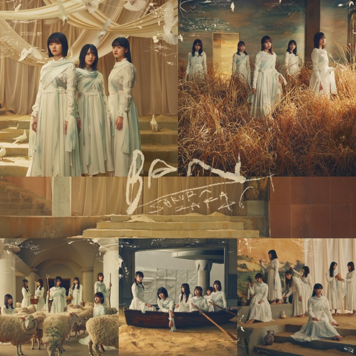

サカミチ
サカミチ思ったよりも寂しくないおもったよりもさびしくない

初収録リリース「BAN」のジャケット
櫻坂46
発売日：2021-04-14
収録：BAN（2ndSG）
種別：カップリング曲［マルチセンター］
センター：山﨑天
作曲：伊藤賢、辻村有記
編曲：伊藤賢、辻村有記
ライブ披露：51件
フォーメーション
上が後列、下が前列です。色付きがセンター。（公式発表に基づく）
大沼晶保
幸阪茉里乃
齋藤冬優花
 増本綺良
増本綺良守屋茜
遠藤光莉
田村保乃
森田ひかる
小池美波
 藤吉夏鈴
藤吉夏鈴菅井友香
小林由依
山﨑天
渡邉理佐
参加メンバー（14名）
小池美波、小林由依、齋藤冬優花、菅井友香、守屋茜、渡邉理佐、遠藤光莉、大沼晶保、幸阪茉里乃、田村保乃、藤吉夏鈴、増本綺良、森田ひかる、山﨑天
この曲が披露されたライブ（51件）
新しい順に20件まで表示しています（全51件）。